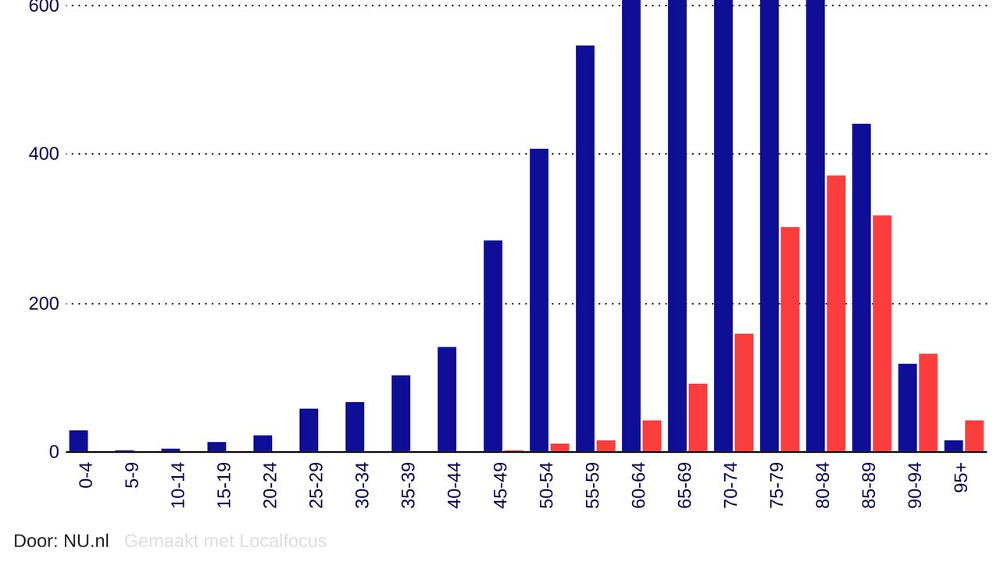

In januari 2020 was het COVID-19 virus in Nederland. De eerste besmitting die bekend werd gemaakt was in februari tijdens een NOS uitzending. Verder was het corona virus al langer in de wereld. In China, Wuhan is het virus zich gaan verspreiden. Het virus dat COVID-19 veroorzaakt, wordt voornamelijk verspreid via vochtdruppeltjes die vrijkomen als een besmette persoon hoest, niest of uitademt. De druppels zijn te zwaar om in de lucht te blijven hangen en dalen snel neer op de grond of andere oppervlakken.
Meer landen hebben last van het coronavirus. Het virus wordt inmiddels een pandamie genoemd.Elke dag worden wereldwijd gemiddeld meer dan 624.578 nieuwe besmettingen geregistreerd. Dit voorjaar reisde het virus vanuit bakermat China razendsnel naar Azië, Europa, de Verenigde Staten en de rest van de wereld. Op dit moment is Europa opnieuw het zwaarst getroffen continent. Een op drie nieuwe infecties worden in Europa vastgesteld, goed voor een gemiddelde van meer dan 193.000. besmette Europeanen per dag. Op het Noord-Amerikaanse continent zijn dat er momenteel 232.000 per dag
mogelijk in januari 2021 worden de eerste mensen in Nederland gevaccineerd tegen het coronavirus. De startdatum hangt af van het moment van goedkeuring door de EMA en markttoelating door de Europese Commissie. Dit moment van goedkeuring is nu voor eind december voorzien. Dit betekent dat in de logistieke operatie alles erop gericht is om met de uitvoerende partijen zo vroeg mogelijk in januari te starten met vaccineren. Het RIVM en de GGD’en werken hard aan het voorbereiden en inrichten van locaties, zodat alles in januari gereed is. Defensie ondersteunt hierbij. Vanzelfsprekend vindt alles in afstemming plaats met de andere uitvoeringspartijen die ook een bijdrage leveren, zoals instellingen, arbodiensten en bedrijfsartsen.
